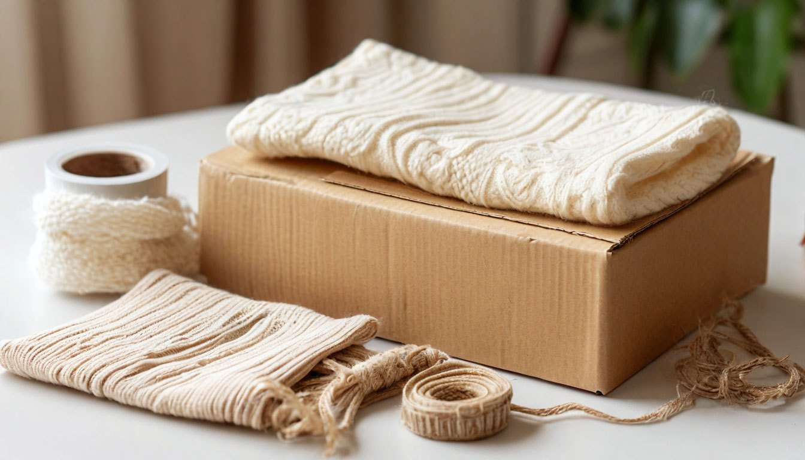

Как определить накрученные отзывы на маркетплейсе: 5 признаков, которые видно сразу
Карточка товара с рейтингом 4,9 и тысячей отзывов выглядит надёжно. Но высокий рейтинг сам по себе ничего не гарантирует, и это я поняла, когда работала менеджером по маркетплейсам.
Изнутри хорошо видно, что отзывы для продавца это главный инструмент продаж. Поэтому их стараются получить любыми способами: просят, дарят баллы, а иногда и накручивают.
Сейчас я покупаю как обычный человек, но смотрю на отзывы по-другому. Вот пять признаков, по которым накрутку обычно видно за пару минут.
Признак №1: много отзывов за несколько дней
Настоящие отзывы набираются постепенно: люди получают заказ, пользуются, и только потом пишут. Если у товара десятки пятёрок за одну-две недели, а дальше тишина, это повод насторожиться.
Что делать: отсортировать отзывы по дате и посмотреть, как они распределены. Ровный поток за месяцы выглядит естественнее всплеска. Особенно подозрительно, когда карточка новая, а отзывов у неё уже сотни.
Признак №2: текст подходит к любому товару
«Всё супер, рекомендую», «качество отличное, доставка быстрая». Такие отзывы ничего не говорят о самой вещи: ни о размере, ни о запахе, ни о том, как она ведёт себя после стирки.
Что делать: искать отзывы с деталями, которые можно проверить. Человек, который правда пользовался вещью, пишет про конкретное: «маломерит на размер», «через неделю отклеилась подошва». Фото, снятое дома на обычный телефон, тоже говорит в пользу отзыва больше, чем идеальная картинка как из каталога.
Признак №3: отзывы о другом товаре
Это самый неочевидный признак, и о нём мало кто знает. Иногда в одной карточке оказываются отзывы на совсем другую вещь: на другой цвет, другую модель или вообще другой товар. Так новая карточка сразу получает высокий рейтинг.
Что делать: открыть пять-шесть отзывов с фото и проверить, тот ли на них товар. Если на фото не та вещь, что в описании, рейтингу верить нельзя. Иногда это видно и по тексту: человек хвалит чайник в карточке сковороды.
Признак №4: в отзывах только восторг, а в вопросах жалобы
В вопросах к товару люди часто пишут честнее и резче, чем в отзывах: это место, где спрашивают, а не хвалят. Если в отзывах всё идеально, а в вопросах спрашивают «почему пришёл другой размер» или «где мой заказ», картина уже другая.
Что делать: всегда пролистать раздел вопросов и ответов, хотя бы первые десять. Заодно посмотрите, отвечает ли продавец: если вопросы висят неделями без ответа, с возвратом тоже может быть непросто.
Признак №5: тройки и двойки слишком похожи на правду
Отрицательные отзывы накручивать незачем, поэтому именно они чаще всего настоящие. Если в них повторяется одна и та же проблема, она, скорее всего, есть у всех.
Что делать: читать сначала отзывы на три звезды. Там люди обычно спокойно пишут, что понравилось и что нет, без восторга и без злости. Единицы тоже стоит пролистать, но к ним отношусь осторожнее: часто это жалоба на доставку, а не на сам товар.

От автора
Я не думаю, что все отзывы фальшивые. Большинство продавцов работают честно, а покупатели пишут правду. Просто высокий рейтинг стоит считать началом проверки, а не её концом. И чем дороже вещь, тем больше смысла потратить на неё лишние две минуты.
Мне так спокойнее покупать: пара минут на проверку отзывов обходится дешевле, чем возврат и поездка в пункт выдачи.
Это первая статья серии «Глазами бывшего менеджера маркетплейсов». Дальше расскажу, как понять, что скидка ненастоящая. Подписывайтесь, чтобы не пропустить.
А вам попадался товар, который оказался совсем не таким, как в отзывах?